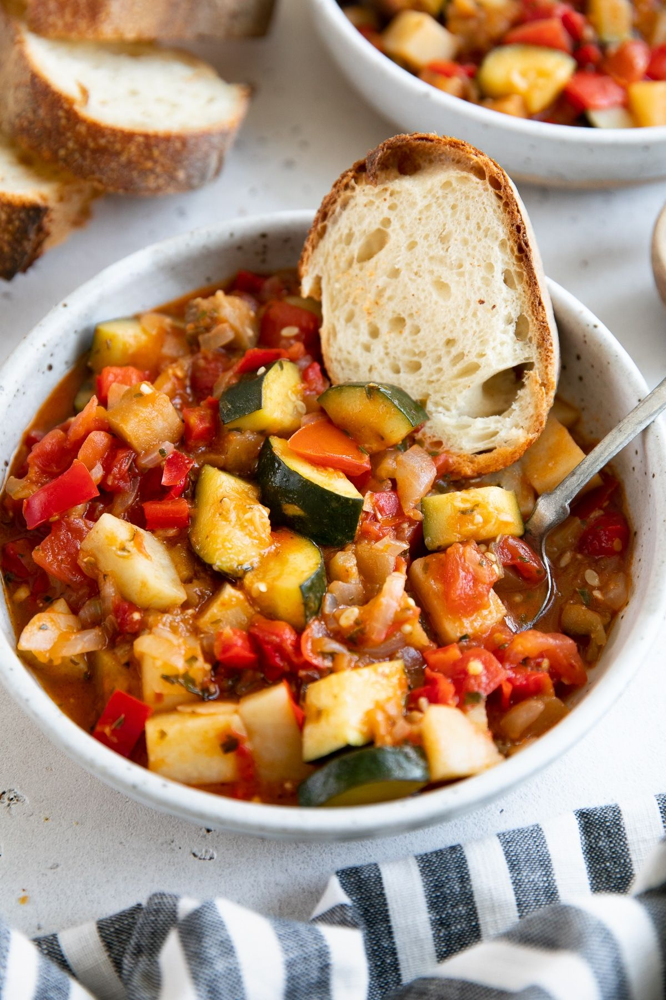

Easy and Authentic Ratatouille Recipe

Ratatouille is an eggplant and tomato-based dish that is a staple of
French cuisine, as well as an American favorite.
However, this Ratatouille is not prepared as was made popular in the animated
Pixar film Ratatouille. Instead of layering the dish in thin rounds,
we will chop everything up small and throw it into one big pot,
and cook it stove-top rather than in the oven. This way, all the flavors
can really combine and the vegetables will get nice and soft.
Estimated total prep and cooking time: 1 hour
Ingredients
- 1 medium-sized eggplant
- 1 yellow onion
- 3-4 cloves of garlic
- 2 bell peppers (yellow or orange)
- 1 large zucchini
- 3 tbsp tomato paste
- 2 cups (chopped) of cherry tomatoes
- 1/2 cup (chopped) of fresh parsley
- 1/2 cup of fresh basil
- Olive oil
- Goat cheese (preferably crumbles)
- 1 tbsp of balsamic vinegar
- 1/2 of a lime
- Salt and black pepper, as needed
- (Optional) 1 cup of chopped crimini mushrooms
Steps
- Dice your onion and bell peppers into 1/2 inch pieces. On
the stovetop, add 4 tbsp of olive oil to a medium-sized pot
(or large pan) over medium heat. Add the onion and the bell
peppers, with a pinch of salt, and stir regularly.
- Meanwhile, slice the eggplant into 3 cm rounds and then chop
them into about 1/2 inch pieces. Once the onions are translucent
(about 10 minutes), add the eggplant to the pan, with more olive oil,
salt, and pepper as needed. If using mushrooms, slice them into 1 cm
rounds and add them shortly after the eggplant.
- Slice the zucchini into 3 cm rounds and then chop into 1/2 inch
pieces. When the eggplant is soft (about 8 minutes), add the chopped
zucchini to the pan. Stir in the tomato paste and minced garlic as well.
- Cut the cherry tomatoes into quarters. When the zucchini has softened,
add the tomatoes and the balsamic vinegar. Add lime
and spices to taste. Reduce the heat to low and cover the pot/pan.
After about 10 minutes, stirring consistently, it should thicken and
develop a stew-like consistency.
- Remove from heat, stir in parsley, basil, and goat cheese.
Top with more fresh herbs and cheese, and serve with a slice of
toast. Bon appétit!